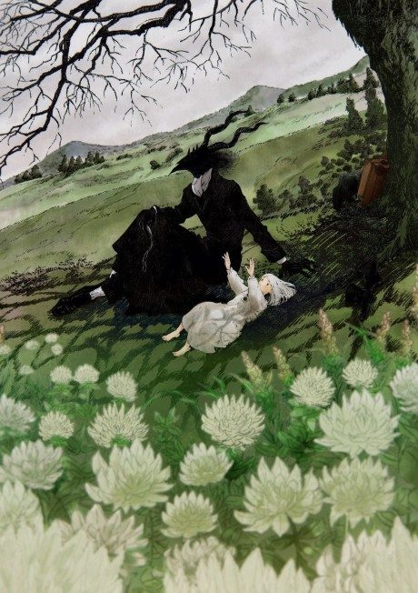
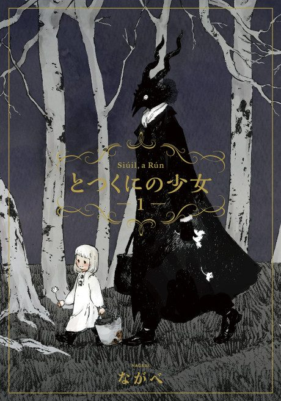

Anime
MangaThe Girl from the Other Side
とつくにの少女 (2022)
The anime takes the story to Unclear.
7.5AniList
—Animeter
1 epSeason 1
Anime finished. Where does the manga pick up?
StatusNo source yet
We looked for where the anime ends in the manga but found no source we trust yet. The manga is 53 chapters, finished.